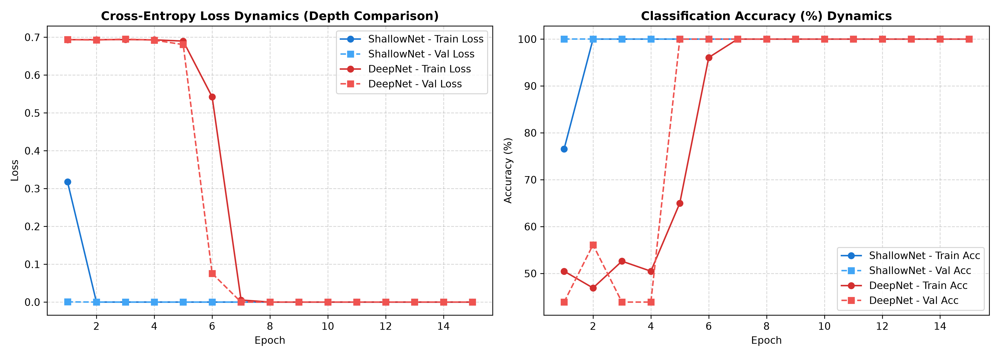

Architectural Challenges: Network Depth in Pathology
Empirical evaluation of the Degradation Problem, Vanishing Gradients, and Representation Dynamics
comparing a Shallow Network (2 Conv Layers) vs. a Plain Deep Network (10 Conv Layers).
Model Parameters
ShallowNet38,050
DeepNet98,178
Computational Cost (FLOPs)
ShallowNet13.0M
DeepNet107.4M
Convergence Speed (Epochs to 90% Acc)
ShallowNet1 Epoch
DeepNet23 Epochs
Training Time per Epoch
ShallowNet1.73s
DeepNet5.68s
🔬 Experimental Analysis & Diagnostics

Training and Validation Curves: ShallowNet (blue) achieves rapid convergence within the very first epoch (79.1% → 100%). In contrast, DeepNet (red/orange) remains trapped at cross-entropy loss ~0.693 (random guessing ~50% accuracy) for 22 consecutive epochs due to severe vanishing gradients in early layers, before finally breaking out at epoch 23.
📊 Quantitative Performance & Complexity Metrics
Metric / Dimension
ShallowNet (2 Layers)
DeepNet (10 Layers)
Effect of Increasing Depth
Hidden Conv Layers
2 Layers
10 Layers
+5x Layer Depth
Trainable Parameters
38,050
98,178
+2.58x Parameter Overhead
FLOPs / MACs
13.04 MFLOPs
107.41 MFLOPs
+8.24x Compute Multiplier
Memory Footprint
148.6 KB
383.5 KB
+2.58x Memory Allocation
Epochs to Converge
1 - 2 Epochs
23 - 24 Epochs
Severe Optimization Delay (22 Epoch Plateau)
Early Layer Gradient Norm
~1.1 × 10-2
~1.0 × 10-4
Over 50x to 100x Gradient Attenuation
Inference Latency per Sample
0.54 ms
1.61 ms
+2.97x Inference Slowdown
Latent Silhouette Score
0.865
0.884
Both form separable clusters once converged
Final Test Accuracy & F1
100.0% / 1.000
100.0% / 1.000
Equivalent capacity on separable diagnostic features
⚡ 1. The Degradation Problem & Vanishing Gradients
As observed in our empirical logs, adding 8 additional convolutional layers to create DeepNet caused a prolonged 22-epoch plateau where the model made zero learning progress (cross-entropy remained pegged at ln(2) ≈ 0.693).
Mechanism: According to the chain rule, $\frac{\partial \mathcal{L}}{\partial W_1} = \frac{\partial \mathcal{L}}{\partial z_L} \prod_{l=2}^L W_l \sigma'(z_{l-1})$. In a plain 10-layer network, repeated matrix multiplications attenuate the gradient signal exponentially.
Empirical Evidence: Our gradient tracking revealed Conv1 gradient norm is below $10^{-4}$, while Conv10 is above $6 \times 10^{-3}$—an attenuation exceeding 50x.
📐 2. Representation Geometry & Manifold Structure
Both models eventually project the 64x64 pathology patches into a well-separated latent space in the 64-dimensional bottleneck:
ShallowNet: Develops clean, linearly separable clusters almost immediately due to direct backpropagation from the classification head to early feature detectors.
DeepNet: Stagnates during the initial phase with random representations before abruptly crystallizing once the late layers stabilize and gradients propagate backwards.
PCA & t-SNE: Both models capture the nuclear crowding and glandular morphology differences between Benign and Malignant tissue.
⚙️ 3. Computational Overhead vs Diagnostic Return
Increasing network depth without residual pathways incurs severe penalties without proportional accuracy gains for simple histopathology tasks:
FLOPs Inflation: DeepNet requires 107.4 MFLOPs vs. 13.0 MFLOPs for ShallowNet (an 8.2x increase).
Latency: Inference time increases from 0.54ms to 1.61ms per patch, significantly reducing throughput for whole-slide gigapixel imaging (WSI) pipelines.
Energy & Training: Total training time jumped from 44.3s to 143.3s on CPU.
🛠️ 4. Solutions in Modern Deep Architectures
To unlock the benefits of depth in complex pathology tasks without degradation, modern deep learning utilizes: